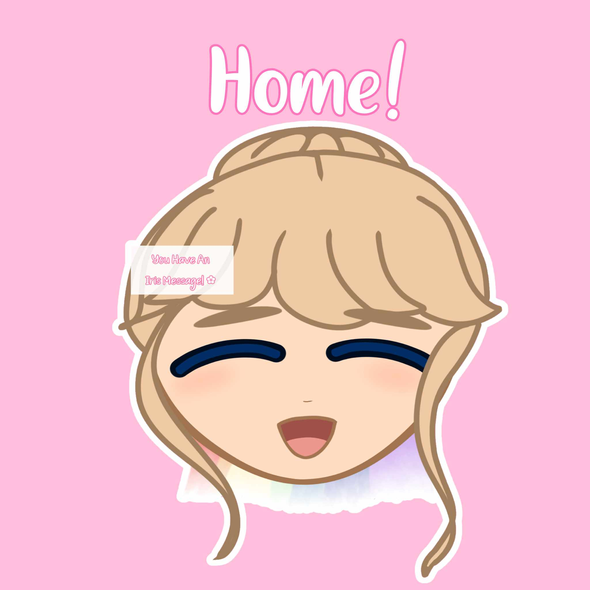
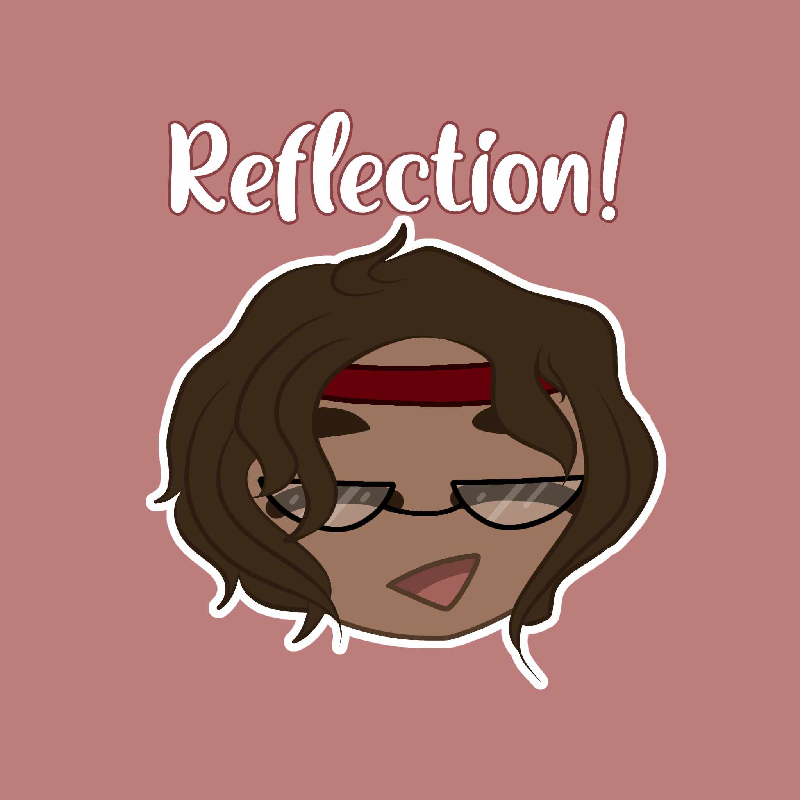

Reflection
⋆｡ﾟ☁︎｡⋆｡ ﾟ☾ ﾟ｡⋆
Listen while you read!
• (credit: Tightrope from the Greatest Showman sung by Michelle Williams)
Once again, we come to this, a reflection on this past quarter. This quarter of TLE-ICT was undoubtedly an experience worth remembering. With this chapter of our ninth grade lives, came new lessons and challenges. Our topics circled around CSS, something we were already acquainted with from our previous school year. However, this quarter has made us realize that we've barely scratched the surface. We were introduced to newer concepts to the old idea, learning different ways to utilize it, tools we could use to improve our websites using CSS, and overall gained a deeper understanding of it. Admittedly, some lessons were harder than orders, but because of the great efforts of our teacher, Miss Uminga, they were much easier to absorb and digest. Our skills in coding, while it’s not the best yet, it’s certainly improved quite a bit. While yes, it’s in my opinion, more time consuming to code, the outcome is worth the wait. I have a lot to take away from this quarter, and I know they will serve me useful, to the future quarters that are to come. I look forward to everything that may come in this subject in the future, and for all the improvement and skills that will come with it…
⋆｡ﾟ☁︎｡⋆｡ ﾟ☾ ﾟ｡⋆
Venture more!



